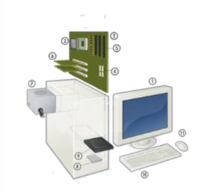
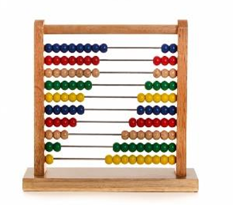
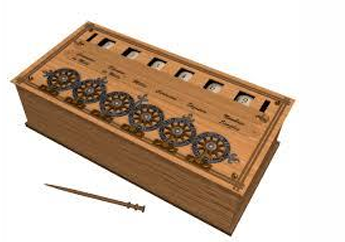
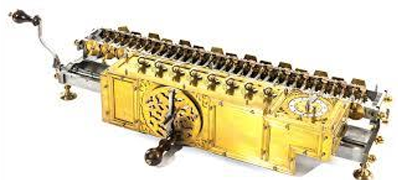

| Computadora, es una máquina electrónica digital programable que ejecuta una serie de comandos para procesar los datos de entrada, obteniendo convenientemente información que posteriormente se envía a las unidades de salida. | |
| Una computadora está compuesta por numerosos y diversos circuitos integrados y varios elementos de apoyo, extensión y accesorios, que en conjunto pueden ejecutar tareas diversas con suma rapidez y bajo el control de un programa (software). |  |
| La constituyen dos partes esenciales, el hardware (circuitos electrónicos, cables, gabinete, teclado, ratón, etc.), y el software (programas, datos, información, documentación, etc.). |
Historia |
| A través del tiempo | Eventos más trascendentales |
|---|---|
|
Ábaco (5,000 años atrás)  |
Primera Generación (1945-1956)
|
|
Calculadora de Pascal (1642)  |
Segunda Generación (1956-1963)
|
|
Máquina de multiplicar de Leibniz (1694)  |
Tercera Generación (1964-1971)
|
Clases y categorías |
| Clases y Categorías de Computadoras | |
|---|---|
| Clases | |
| Análoga | |
| Digital | |
| De uso general | |
| De uso especial | |
| Categorías | |
| Supercomputadora | |
| Mainframe | |
| Minicomputadoras | |
| Servidor | |
| Microcomputadoras | |
Componentes |
|
Referencias |